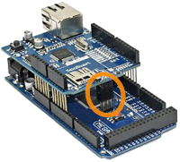

Objectifs pédagogiques
Les objectifs principaux de ce sujet de travaux pratiques sont :
- d'apprendre à synchroniser sur l'UTC – le « temps Internet » – une carte Arduino ;
- de comprendre ainsi les principes de la mise en œuvre programmée d'un client NTP ;
- d'analyser le contenu d'un message NTP envoyé par un serveur de temps suite à une requête de synchronisation, et ce faisant de vérifier les éléments exposés dans le cours (chap. R2‑VI ).
Des objectifs secondaires sont :
- d'exploiter les compétences de codage acquises en langages C/C++ (notamment les fonctions de manipulation de mots binaires) et de comprendre à quel point elles sont utiles pour l'exploitation des protocoles réseaux ;
- de découvrir certaines bibliothèques de fonctions spécialisées pour les cartes à microcontrôleur de type Arduino.
Pour traiter ces exercices, il est recommandé d'avoir bien étudié le chapitre R2‑VI du cours. Des renvois aux principaux éléments de cours ou à des pages web d'information générale sont donnés au fur et à mesure des questions.
Mise en situation
Environnement et matériel
Les manipulations demandées sont à accomplir sur un réseau local utilisant la pile de protocole TCP/IP, raccordé à l'Internet. On requiert le matériel ci‑dessous :
- une carte Arduino Uno ou Mega, équipée d'un module d'extension shield Ethernet 2 ; cette association est l'architecture matérielle retenue pour implémenter le client NTP ;
- un poste de travail (typiquement, un PC) qui servira :
- de terminal de programmation de la carte via le logiciel Arduino IDE ;
- de client ICMP pour tester la visibilité de la carte sur le réseau ;
- d'horloge Internet via une page web pour vérifier la bonne synchronisation de la carte avec le temps universel coordonné.
Ces deux machines doivent être l'une et l'autre raccordées au réseau local – typiquement, via un switch comme sur la figure ci‑dessus – et se voir attribuer chacune une adresse IP sur le même segment pour pouvoir communiquer – ce qui est assuré avec la présence d'un serveur DHCP sur le réseau local et la configuration appropriée des machines (cf. chap R2‑II ). Évidemment, il faut connaître la plage d'adresses IP dynamiques paramétrée par l'administrateur du réseau pour pouvoir identifier les machines lors d'un scan du réseau.
Travail demandé
Effectuer les manipulations dans l'ordre indiqué et le codage des fonctions demandées en respectant les spécifications indiquées.
Dans une perspective de consolidation des connaissances, il est recommandé de bien comprendre le codage des fonctions employées pour la mise en œuvre ou l'étude du protocole NTP.
Exercices
- Travail préparatoire
- Avant d'assembler le shield Ethernet sur la carte Arduino, relever l'adresse MAC inscrite sur l'étiquette collée sur la face inférieure du shield.
- Assembler le shield Ethernet sur la carte Arduino avec soin, sans forcer, en faisant bien coïncider toutes les broches mâles/femelles correspondantes, y compris celles au centre de la carte, formant le connecteur ICSP (cf. la partie entourée en orange sur la figure ci‑contre).
- Sur le poste de travail, avec le logiciel Arduino IDE, ouvrir le code source du programme de test du système fourni via ce lien :
- Coder les octets de l'adresse MAC du shield Ethernet.
- Coder le numéro de broche de sélection – celui désigné par le sigle SS, pour slave select – du shield Ethernet sur le bus SPI W utilisé les communications entre la carte Arduino et le port Ethernet du shield (cf. la page de référence A).
- Enregistrer le programme ainsi modifié dans un répertoire homonyme lui‑même placé dans votre répertoire de TP.
- Mettre sous tension la carte Arduino et raccorder le shield Ethernet au réseau local.
- Sur le poste de travail :
- Ouvrir le moniteur série intégré à l'IDE Arduino en réglant la même vitesse de transmission que celle codée dans le programme.
- À l'aide d'un logiciel de scan réseau (cf. chap. R1‑II ), vérifier que la carte est détectée et retrouver son adresse IP.
- Dans un terminal de commandes en ligne, vérifier que cette adresse répond à la commande
ping. - Mise en place et configuration d'un client NTP
- Sur le poste de travail, télécharger le programme de client NTP fourni via ce lien . Dans votre répertoire de TP, extraire l'archive puis ouvrir le fichier
.inoavec le logiciel Arduino IDE. - dans le fichier principal
megaNTPclient_elv.ino, coder les octets de l'adresse MAC du shield Ethernet ; - dans le fichier auxiliaire d'implémentation
NTPethernetClient.cpp, coder le numéro de broche de sélection du shield Ethernet sur le bus SPI. - Coder dans le fichier principal
megaNTPclient_elv.inoles deux règles de changement d'heure DST pour la zone horaire de la France métropolitaine (cf. le cours pour la détermination des dates et pour la syntaxe de codage des règles ). - Coder dans le fichier auxiliaire d'implémentation
megaNTPethernetClient.cpp: - la valeur de la pseudo‑constante
UNIX_EPOCH(cf. cours ) ; - les valeurs respectives des pseudo‑constantes définissant les numéros de port du serveur NTP (cf. cours ) et du client UDP (local port – cf. ).
- Téléverser le programme dans la carte Arduino, vérifier le bon fonctionnement en ouvrant le moniteur série (régler la bonne vitesse de transmission).
- Décodage d'une message NTP
- Sur le poste de travail, télécharger le programme de décodage de message NTP fourni via ce lien . Dans votre répertoire de TP, extraire l'archive puis y recopier les fichiers auxiliaires
megaNTPethernetClient.hetmegaNTPethernetClient.cppcomplétés à l'exercice précédent. - En étudiant attentivement la constitution d'un message NTP (cf. cours ), et en employant les opérateurs de manipulation de bits (cf. chap. C3‑III C), compléter le codage des fonctions dans le fichier auxiliaire d'implémentation
NTPstudy.cpp: - la fonction
decodeVNqui retourne la valeur du champVN(version number) ; - la fonction
decodeModequi retourne la valeur du champmode; - la fonction
decodeStratumqui retourne la valeur du champstratum; - la fonction
decodePollqui retourne la durée en secondes de l'intervalle entre deux requêtes, codée en logarithme à base 2 dans le champpoll; - la fonction
decodePrecisionqui retourne la précision en fraction de seconde du serveur, codée en logarithme à base 2 dans le champprecision. - Toujours dans le fichier
NTPstudy.cpp, en s'inspirant du code de la fonctiondecodeIPaddress, compléter celui de la fonctiondecodeStringqui retourne la chaîne de caractères codée dans le champreference id. / kiss of death. - Téléverser le programme dans la carte Arduino et vérifier son bon fonctionnement (chaque champ décodé du message NTP doit avoir une valeur conforme à ce qui est attendu).
- Laisser le programme fonctionner durant quelques minutes et observer les caractéristiques des serveurs de temps répondant aux requêtes, notamment le stratum et la précision, ainsi que le numéro de version du protocole NTP.
- Dans le fichier principal
megaNTPstudy_elv.ino, remplacer le nom de domaine du serveur de temps par celui d'un pool de serveurs qui optimise les temps de requêtes en France métropolitaine (cf. cours ). - Comment peut‑on vérifier que l'adresse IP affichée est bien celle d'un serveur de temps ?
- * Modifier le codage de la fonction
dateAndTimeStringpour obtenir un affichage conforme à la norme ISO 8601 (cf. cours ). Pour cela, il peut être nécessaire de changer les arguments de la fonction, donc aussi son prototype et ses instructions d'appel, voire de coder d'autres fonctions complémentaires.
-

shieldMacAddress, remplacer les lettres HH par les digits hexadécimaux relevés à la question a). N par le numéro de broche indiqué sur la page de référence. SPI et Ethernet) sont disponibles dans l'IDE, sinon procéder à leur installation (menu Croquis/Inclure une bibliothèque…). Time A et Timezone A) sont installés dans l'IDE, sinon procéder à leur installation (menu Croquis/Inclure une bibliothèque…). megaNTPethernetClient.h, coder la taille en octets du message NTP (valeur XX de la pseudo‑constante NTP_HEADER_SIZE – cf. cours ). megaNTPstudy_elv.ino avec le logiciel Arduino IDE et modifier en y codant les mêmes changements qu'à l'exercice précédent : les deux règles de changement d'heure, l'adresse MAC de la carte, etc. decodeLI qui retourne la valeur du champ LI (leap indicator), défini dans le fichier NTPethernetClient.cpp.